TECHVESTVENTURES DAILY RISK ALERTS — Emergent News Digest — Nov 11, 2026, 9:00 AM EST ALL RISK REPORTS click TVV Risk Center
TVV RESEARCH DIGEST — November 11, 2026 — 12 desks
1. Major Geopolitical Conflict Developments
- ★ Abu Dhabi talks ended Wednesday with one concrete result: Russia and Ukraine agreed in principle on what US envoy Jared Kushner called "the biggest humanitarian release of prisoners," with numbers to be finalized Thursday; Zelenskyy had said 1,000 per side was discussed, possibly rising to 1,500. There was no breakthrough on a ceasefire, territory or security guarantees. Russia still demands Ukraine leave the rest of Donbas, and its negotiator Vladimir Medinsky said Moscow did not talk with the Europeans present and did not see what there was to discuss with them. AP · Euronews
- ★ Next step: Steve Witkoff and Jared Kushner meet Putin in Moscow on Thursday, Nov 12, then brief Zelenskyy in Dublin. Kushner said a Putin–Zelenskyy meeting "would be great," but Russia wants more progress first. Russia struck five major Ukrainian substations in 10 regions the night the talks opened, causing outages in Kyiv, Kharkiv and Dnipropetrovsk and killing two people in Vinnytsia. Odds: Polymarket prices a ceasefire by Dec 31 at 13.5% and Ukraine giving up the rest of Donbas by Dec 31 at 3.6% (see graph), so traders read the swap as a humanitarian step, not a peace path. RFE/RL · Reuters · Polymarket
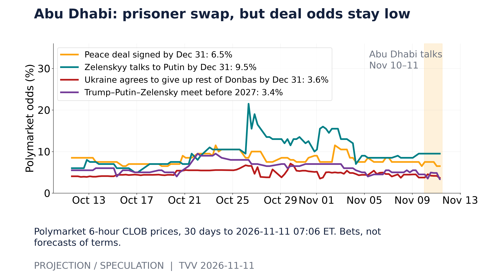
Abu Dhabi: prisoner swap, but deal odds stay low. Polymarket 6-hour CLOB prices, 30 days to 2026-11-11 07:06 ET. Bets, not forecasts of terms. [Projection/Speculation; data as of 2026-11-11 07:06 ET] Source: polymarket.com data page
- ★ Hormuz (conflicting claims, screen skeptically): the IRGC says two more tankers hit naval mines and exploded overnight while leaving by an "unauthorized route" under US fighter-jet escort, after claiming three tanker fires on Tuesday; it named no ships. UKMTO separately logged a tanker struck by an unknown projectile northeast of Lima, Oman, and another tanker incident Wednesday with crew and damage unknown, and it is unclear whether these match Iran's claims. The US says the southern lanes are cleared of mines and safe, and CENTCOM says about 1.5 billion barrels have passed under its escort since the summer. The Washington Institute counts 37 ship attacks in October, the most of the war, and 10 so far in November. CBS News · Arab News · CNBC / Reuters
- ★ Iran's line hardens: security chief Mohsen Rezaei denies any talks with Washington, says Hormuz stays shut until the US meets Tehran's seven conditions (which include lifting sanctions and the naval blockade and ending fighting on all fronts), and says Iran "will not remove even a single particle of enriched nuclear material" from the country. Allianz Trade estimates the war has caused just over $200 billion of physical damage in Gulf states, mostly to energy infrastructure, with more than 80 energy facilities hit, and says economic losses could reach nearly four times that by 2030. Al Jazeera / Reuters · CBS News
- ★ Gaza: Israeli strikes and gunfire killed at least eight Palestinians on Tuesday and three more on Wednesday, per local health officials. Gaza's Health Ministry says more than 1,600 people have been killed since last year's US-brokered ceasefire; those figures come from the Hamas-run ministry and are not independently verified. Al Jazeera / Reuters · AP
2. Major Terror / Security Incidents
- ★ Bangladesh update: the crude-bomb and arson wave has now run three days, with one death (a bus driver in Faridpur who died when his parked bus was set on fire while he slept) and new injuries in Dhaka, including a bomb blast outside the Dhaka University business faculty. The Business Standard counts at least 22 incidents nationwide between Monday and Tuesday after 19 buses were torched over the weekend. Police say paid recruits tied to the banned Chhatra League are behind the attacks; police have filed 11 cases with 29 arrests nationally (a separate count gives 33 arrests in Dhaka on Monday alone), and 188 people have been detained in Cumilla. The violence coincides with reports that Sheikh Hasina plans to return from exile next month. AP · The Business Standard
- ★ Pakistan: drones struck the main army camp in Khadkocha, Mastung, and an IED destroyed a security vehicle in Kalat, Balochistan, on Monday, with casualties reported but not counted. The day before, the Baloch Republican Guards claimed it killed five security personnel in a drone strike and convoy ambush in Kachhi. Both the BRG and the BLA now run dedicated drone units, so cheap drones are spreading among insurgents. IANS / Balochistan Post
- ★ Sahel and Nigeria: jihadist fighters killed 23 Nigerien soldiers in an attack in Niger, which declared three days of mourning, and Algeria says it will deploy troops to northern Niger to protect shared energy facilities. In Nigeria's Plateau State, gunmen killed three people at a mining site on Tuesday, days after five died in separate attacks. Conflict Tracker · Sahara Reporters
- ★ Cyber: an attacker used a remote-code-execution flaw in SGLang, an open-source AI inference engine, to break into a NEAR AI server inside its confidential computing enclave. The attacker took chat histories, settings and logs from 18 AI agents and account details for about 100 users, and two customer API keys were exposed. The company says the enclave cannot protect against flaws in the software running inside it. Separately, CISA's exploited-flaw list has reached 296 additions in 2026, but its weekly pace is easing: 7.5 per week over eight weeks, with a falling 12-week trend (see graph). The Hacker News · CISA KEV
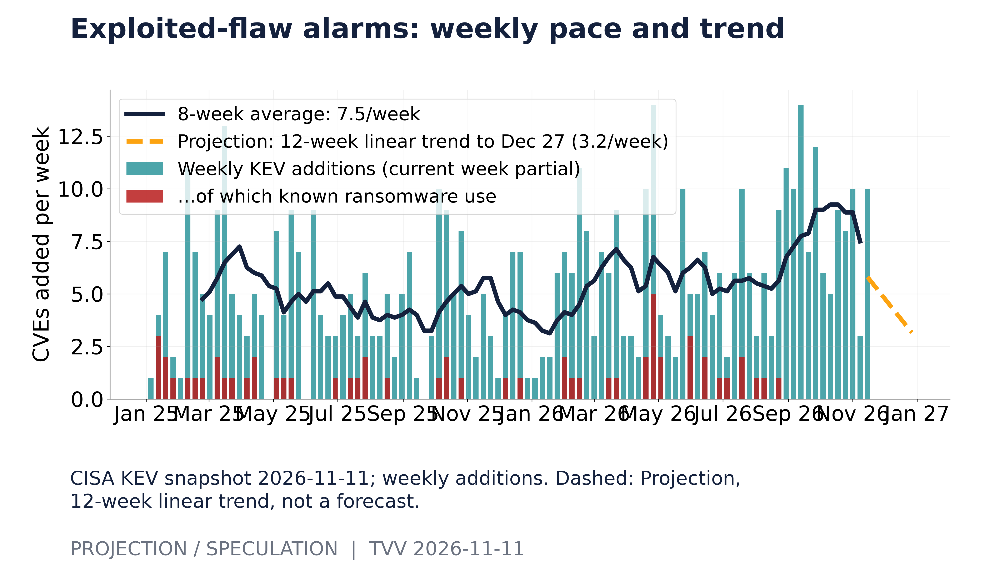
Exploited-flaw alarms: weekly pace and trend. CISA KEV snapshot 2026-11-11; weekly additions. Dashed: Projection, 12-week linear trend, not a forecast. [Projection/Speculation; data as of 2026-11-11] Source: cisa.gov data page
3. Earthquakes and Eruptions
- ★ No new M6.0+ quake with significant casualties or damage since the last issue. The strongest on Tuesday was an M5.6 off Guatemala's Pacific coast at 35 km depth, felt in El Salvador and Nicaragua. USGS logged 671 M4.5+ events and 20 at M6+ worldwide over the past 30 days, led by the M7.0 in Tibet on Oct 22 (see map). Quakewire · GMA News · USGS
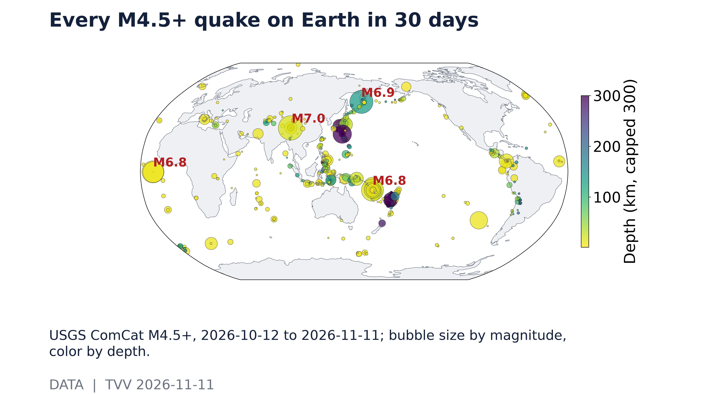
Every M4.5+ quake on Earth in 30 days. USGS ComCat M4.5+, 2026-10-12 to 2026-11-11; bubble size by magnitude, color by depth. [Data; data as of 2026-11-11] Source: earthquake.usgs.gov data page
4. Solar / Space Weather
- ★ Storm watch: Kp peaked at 5.33 (G1 level) in the past week, but NOAA's official 3-day forecast issued Wednesday tops out at Kp 3 through Nov 13, with no G1 or stronger storms expected (see graph). Sunspot Region 4566 keeps a 15% daily chance of a strong (R3) radio blackout and of a minor radiation storm, unchanged from Tuesday. NOAA SWPC 3-day forecast · NOAA SWPC Kp
- ★ Long-horizon watch: magnetic north keeps drifting toward Siberia in NOAA's measured and modeled data, but no one can predict the timing of a sudden geomagnetic shift. Michael Hentschel's own view: 2035 at the earliest, with critical earth changes along the way. Next weekly globe: Nov 15. NOAA NCEI
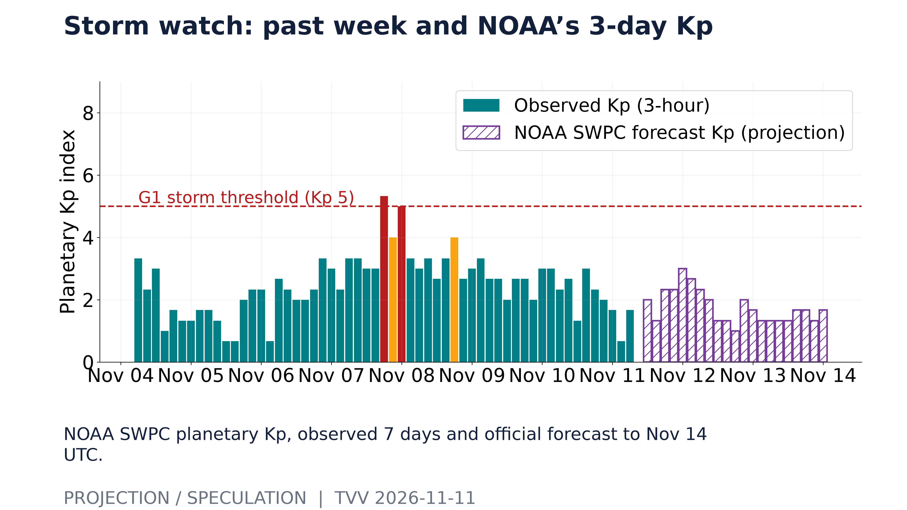
Storm watch: past week and NOAA’s 3-day Kp. NOAA SWPC planetary Kp, observed 7 days and official forecast to Nov 14 UTC. [Projection/Speculation; data as of 2026-11-11 06:00 UTC] Source: services.swpc.noaa.gov data page
5. Critical Infrastructure / Transportation Disruptions
- ★ Power gear is now the bottleneck: SoftBank booked a $3.7 billion loss after changing its procurement plans for power-generation equipment for US AI data centers, including its Ohio campus, part of a $7 billion quarterly net loss. It had paid $9.48 billion in advance for that equipment by Sept. 30 to beat shortages and long lead times, and expects up to $2.1 billion of rebates on future purchases. CNBC
- ★ Debt-funded build-out: CoreWeave's Q3 revenue rose 168% to $3.66 billion, but net interest expense reached $846 million, and the company guides Q4 interest expense to $1.05–1.15 billion (see graph). It raised 2026 capex to $37–39 billion. Its CFO says it plans no new parent-level unsecured bonds through 2027 while yields stay this high, and expects about $9 billion of customer prepayments and deposits in the next three months. CoreWeave's five-year credit default swaps had blown past their October highs before the report. CoreWeave · CNBC · Quartz
- ★ Ukraine grid: overnight into Tuesday, Russian strikes hit five major substations in the Poltava, Dnipropetrovsk, Vinnytsia and Kirovohrad regions, and Ukrenergo reported homes without power in six regions, including Kyiv, as Moscow's winter air campaign widens to businesses and logistics. Reuters
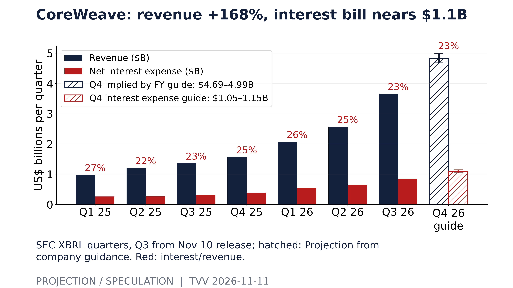
CoreWeave: revenue +168%, interest bill nears $1.1B. SEC XBRL quarters, Q3 from Nov 10 release; hatched: Projection from company guidance. Red: interest/revenue. [Projection/Speculation; data as of 2026-09-30 (Q3 release 2026-11-10)] Source: investors.coreweave.com data page
6. Econo-Metrics
- ★ CPI aftermath: October CPI rose 0.4% month over month against 0.3% expected and core rose 0.3% against 0.2%, the third straight upside surprise. Shelter accounted for more than 30% of the increase, and food rose 0.5%. The 2-year Treasury yield jumped 17 basis points to 4.74% and the 10-year briefly topped 5% before settling at 4.99%, after the weakest 10-year auction demand since June. Data note: TVV's Tuesday computation from the BLS index (about 0.35% headline) rounds to the published 0.4%. Sharecast · Saxo
- ★ More Fed hawks: Dallas Fed President Lorie Logan called for at least two more hikes, and voting member Anna Paulson of Philadelphia backed "further gradual tightening." CME FedWatch now prices an 88.8% chance of a 25 basis point December hike and 11.2% for 50, with no chance of a hold, up from about 72% a week ago. The 2-year yield's spread over fed funds was +68 basis points on Nov 9, before the CPI jump (see graph). US cash Treasuries are closed today for Veterans Day; stocks trade. Investing.com / CME FedWatch · Saxo · FRED
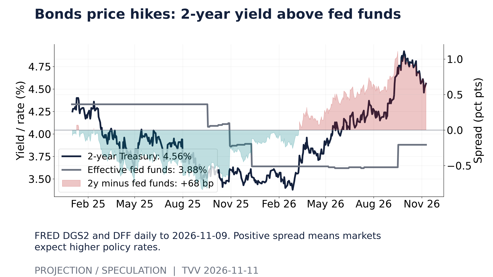
Bonds price hikes: 2-year yield above fed funds. FRED DGS2 and DFF daily to 2026-11-09. Positive spread means markets expect higher policy rates. [Projection/Speculation; data as of 2026-11-09] Source: fred.stlouisfed.org data page
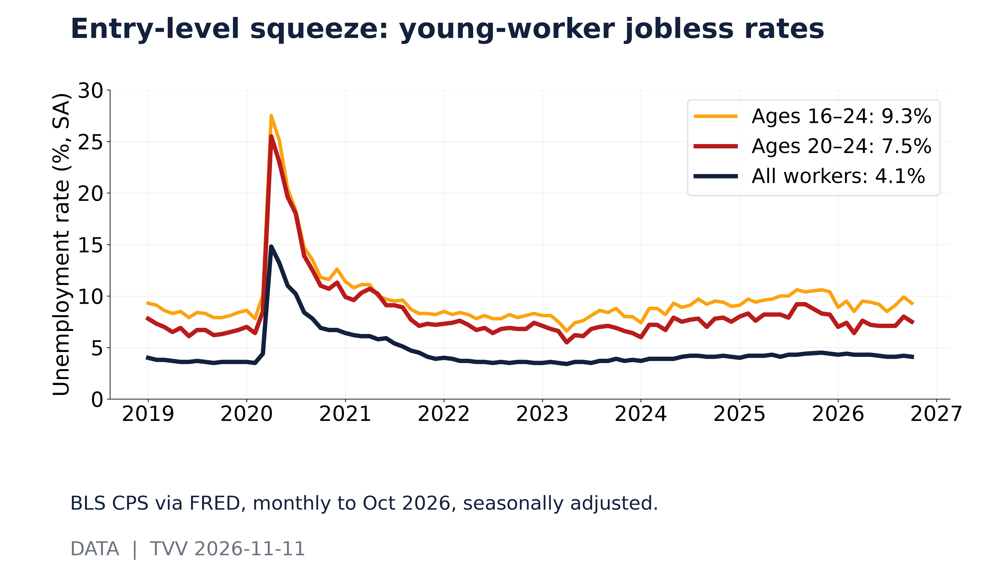
Entry-level squeeze: young-worker jobless rates. BLS CPS via FRED, monthly to Oct 2026, seasonally adjusted. [Data; data as of 2026-10] Source: fred.stlouisfed.org data page
7. Epidemic / Bio-Metrics
- ★ Ebola, DR Congo: cumulative cases passed 11,000 (11,042, per Health Ministry SitRep 179 to Nov 9), with 52 new cases and 33 deaths on Nov 9 alone, across 67 health zones in eight provinces. North Kivu drives new cases. WHO's latest count (data as of Nov 7) is 10,920 confirmed cases and 5,323 deaths. Projection: at the 14-day pace of about 64 cases a day, the total would pass 12,000 before Nov 30 (see graph); this straight-line pace is not an epidemic forecast. There is still no approved vaccine or treatment for the Bundibugyo strain. Kenya and Nigeria report no new cases. DRC MoH via ebola-tracker.org · WHO AFRO · ECDC
- ★ Bird flu: a Yakima County, Washington, resident exposed to infected dairy cattle died of avian influenza on Nov 1, the third US H5N1 death and the first tied to dairy exposure. Two other Yakima residents exposed to cattle were also infected. Washington now has 40 infected dairy herds, and a Pierce County egg farm lost 47,000 hens. CDC counts 72 human cases since February 2024; officials say the public risk remains low. Chinook Observer / Capital Press
- ★ US respiratory hospital rates: in the week to Oct 31, flu hospitalizations ran 1.6 per 100,000 versus 0.3 at the same week last season, while COVID (0.8) and RSV (0.1) ran slightly below last year (see second graph); recent weeks are preliminary. COVID watch: Hong Kong CHP's week 44 report lists PQ.16.1.1 and JN.1 as the most common variants and does not single out SV.2.4, so official data still do not confirm a China surge. CDC RESP-NET · Hong Kong CHP
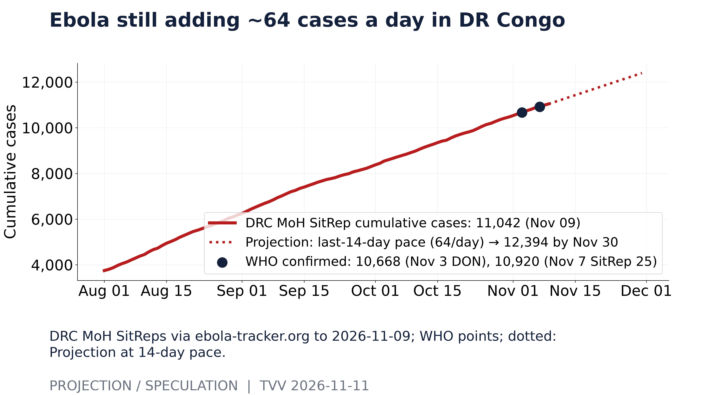
Ebola still adding ~64 cases a day in DR Congo. DRC MoH SitReps via ebola-tracker.org to 2026-11-09; WHO points; dotted: Projection at 14-day pace. [Projection/Speculation; data as of 2026-11-09] Source: ebola-tracker.org data page
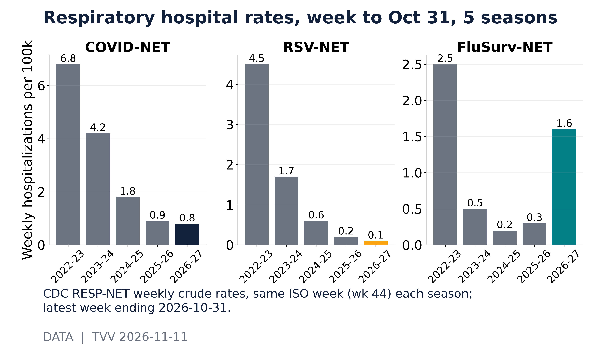
Respiratory hospital rates, week to Oct 31, 5 seasons. CDC RESP-NET weekly crude rates, same ISO week (wk 44) each season; latest week ending 2026-10-31. [Data; data as of 2026-10-31] Source: data.cdc.gov data page
8. Gold and Silver and Commodities
- ★ Gold sank about 2% toward $4,000 on Tuesday after the hot CPI and then rebounded to about $4,043–4,059 Wednesday morning; Saxo sees support at $4,000 and resistance at $4,155. Silver jumped about 2.4–2.9% to near $52.8–53.0. Brent bounced to about $92.2–92.5 from Tuesday's two-month low near $90 on renewed Hormuz attacks, and WTI is near $86.5–87. London gasoil near $1,290 a tonne (about $173 a barrel) shows diesel and jet fuel staying much tighter than crude. Corn and soybeans jumped from multi-month lows after USDA cut its supply forecasts. Exa gold · Exa silver · Saxo · CNBC
- ★ Growth gauge: the copper-to-gold ratio has risen to 1.552 (×1000) from 1.491 90 days ago, with copper at $6.29 a pound, and it has tracked the 10-year yield with a 120-day correlation of +0.52 (see graph). A rising ratio usually signals markets expecting stronger growth and higher yields, which fits the hike repricing. Saxo
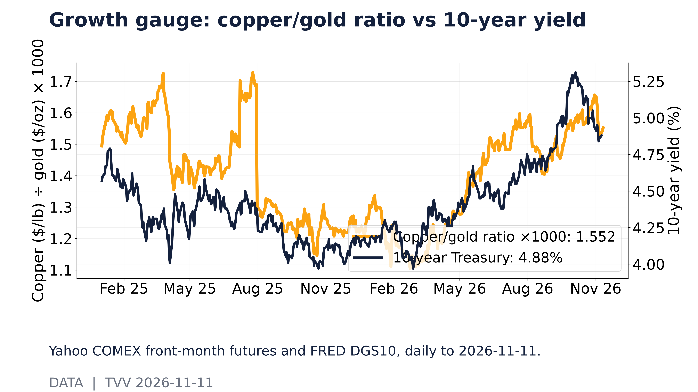
Growth gauge: copper/gold ratio vs 10-year yield. Yahoo COMEX front-month futures and FRED DGS10, daily to 2026-11-11. [Data; data as of 2026-11-11] Source: query1.finance.yahoo.com data page
9. Stock Averages and Nasdaq Major Movers
- ★ Tuesday: the S&P 500 fell 0.38% to 7,520.93, the Dow 0.30% to 52,231.89 and the Nasdaq 0.74% to 25,065.87 after the hot CPI. Nvidia was the worst Dow stock, down 5.47% to $168.89, and Microsoft fell 2.2%, while Charter rose 10.6% and Take-Two 8.3%. The Nasdaq closed below its 50- and 200-day averages, 9.6% under its record; the S&P is 4.1% below its record. QQQ sits 6.2% under its 50-day average and 11.2% under its 2026 closing high (see graph). CNBC · AP · Investing.com
- ★ Wednesday premarket: Nasdaq-100 futures were up 1.9% and S&P futures 0.9% at 7:35 AM ET, led by CoreWeave (up about 11–15%) and an Nvidia rebound of about 5%. Asian chips rallied after TSMC reported 59.7% revenue growth for October, with Taiwan's Taiex up 3.6%. The VIX closed at 19.46, while bond-market volatility (MOVE) jumped to 92.4. CNBC · Saxo
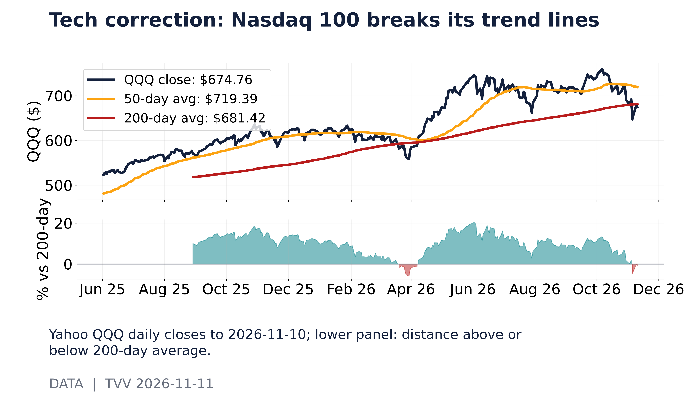
Tech correction: Nasdaq 100 breaks its trend lines. Yahoo QQQ daily closes to 2026-11-10; lower panel: distance above or below 200-day average. [Data; data as of 2026-11-10] Source: query1.finance.yahoo.com data page
10. Polymarket and Kalshi Sentiment Highlights
- ★ Odds: Polymarket's December Fed market has moved from 74.5% to 85.5% for a 25 basis point hike over 30 days, with about 10% on 50 or more and 3.9% on no change (see graph). Data conflict: CME FedWatch has 88.8% for 25 and 11.2% for 50, and no hold at all. In other words, both betting and futures markets now treat a December hike as nearly certain, and the open question is its size. Polymarket · Investing.com / CME FedWatch
- ★ Odds roundup: Polymarket prices a CoreWeave bankruptcy by the end of 2027 at 10.5%, unchanged after the earnings beat (see TECH graph); a Ukraine ceasefire by Dec 31 at 13.5%; and October PPI, due Friday, at a 6.6% median bucket in Tuesday's snapshot. These markets are thin, so treat them as signals rather than forecasts. Polymarket · Polymarket · Polymarket
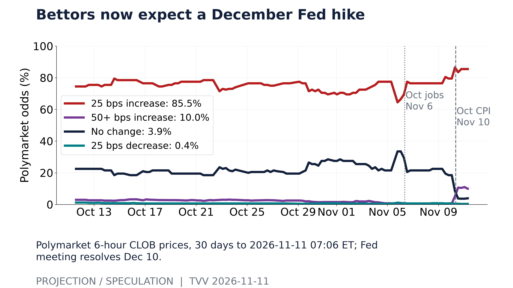
Bettors now expect a December Fed hike. Polymarket 6-hour CLOB prices, 30 days to 2026-11-11 07:06 ET; Fed meeting resolves Dec 10. [Projection/Speculation; data as of 2026-11-11 07:06 ET] Source: polymarket.com data page
11. Tech-Metrics
- ★ Nvidia has hired Wachtell, Lipton, Rosen & Katz to investigate whether company secrets or national security were compromised through Jensen Huang's relationship with a woman US agencies call a Chinese intelligence asset. Huang remains CEO ahead of Nov 17 earnings. Morgan Stanley dropped Nvidia as a top pick after a fall of more than 25% since Oct 2, and Bank of America lays out an escalation scenario of adverse findings, leadership disruption or tighter export restrictions. Shares were up 5.3% premarket after two down days. The Guardian · CNBC
- ★ CoreWeave beat: revenue was $3.66 billion against $3.55 billion expected, and the adjusted loss was 95 cents a share against $1.16 expected. The company raised its 2026 revenue guidance to $13.0–13.3 billion. Odds: the stock jumped about 15% premarket, but Polymarket's bankruptcy odds barely moved: 10.5% by end-2027, 19.5% by end-2028 and 28% by end-2029 (see graph). UBS says restoring confidence "may be a multi-quarter fix," and Morgan Stanley stays Equal weight pending a new delayed-draw loan. CNBC · Quartz · Polymarket
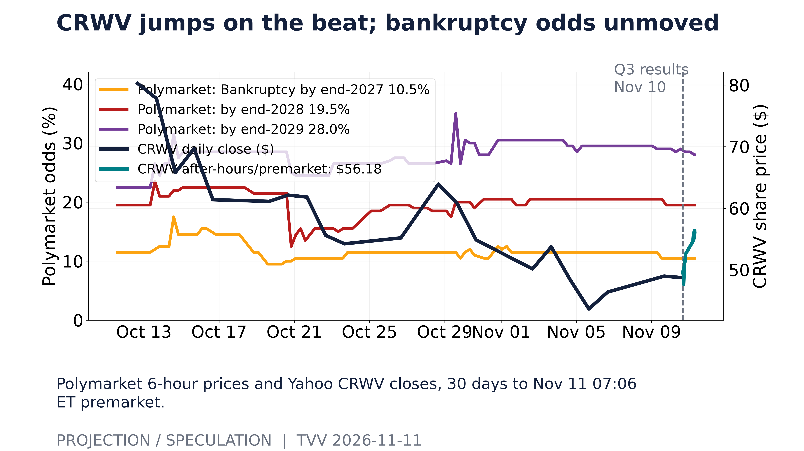
CRWV jumps on the beat; bankruptcy odds unmoved. Polymarket 6-hour prices and Yahoo CRWV closes, 30 days to Nov 11 07:06 ET premarket. [Projection/Speculation; data as of 2026-11-11 07:06 ET] Source: polymarket.com data page
12. AI Hypergrowth Risks
- ★ Concentration in a few AI buyers: CoreWeave's backlog rose to $132.5 billion from $104 billion in June, about 9 times its annualized Q3 revenue, and more than half is tied to contracts due to begin delivery by year-end. It guides to a $20–21 billion annualized run-rate by the end of 2026 (see graph). The backlog is the company's own count, and it leans on a few customers (OpenAI, Microsoft, Meta), so one buyer's pullback would ripple through lenders and suppliers. CoreWeave · Quartz
- ★ Hidden failure modes: Microsoft Research describes a technique that plants backdoors in AI agents by reprogramming "dormant" neurons. Doctors testing Claude and ChatGPT found they confidently missed skin cancers on darker skin, and a Korean study found AI diagnoses up to 74.4% accurate but less reliable after a simple "Are you sure?" On Tuesday, OpenAI API errors again spilled into GitHub Copilot and Cursor, and Notion's agents hung for about two hours. Microsoft Research · Healio · LLM Live digest
- ★ AI success: researchers report an AI tool that flags hereditary kidney diseases (Alport syndrome, Fabry disease, primary hyperoxaluria and tuberous sclerosis) from patients' clinical histories with sensitivity above 84%, which could cut diagnostic delays that now run five to seven years. Ground News / El Periódico
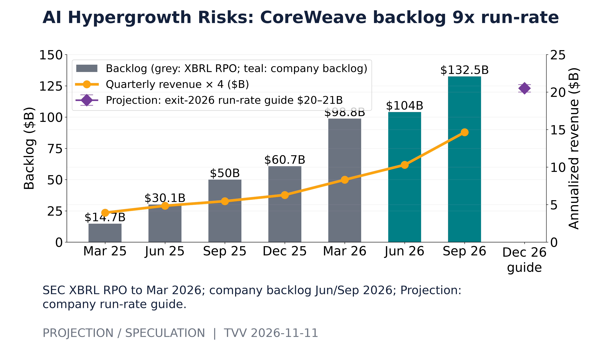
AI Hypergrowth Risks: CoreWeave backlog 9x run-rate. SEC XBRL RPO to Mar 2026; company backlog Jun/Sep 2026; Projection: company run-rate guide. [Projection/Speculation; data as of 2026-09-30 (Q3 release 2026-11-10)] Source: investors.coreweave.com data page
TECHVESTVENTURES ACTION-ALERT — November 11, 2026 see all graphs click TVV Risk Center
EDITOR — Michael Hentschel
Most news events require or spawn no action or reaction, some (but not many) are or become warnings. We draw attention to substantial lifestyle risks and market risks in particular, some created by Mid-Term Vote anxieties, Middle East tensions, vast over-indebtedness globally, and other events we track. Longer term but capable of causing sudden power surges as serious as the Carrington Event. Climate instability occasioned by long-term cyclical solar electro-magnetic flares, is becoming much more prominent and even more likely. New AI predictive analytics and pattern seekers are pointed in some of these directions, and we monitor imminent likelihood. Some readers might hedge and others might see opportunity. The above is not investment advice.